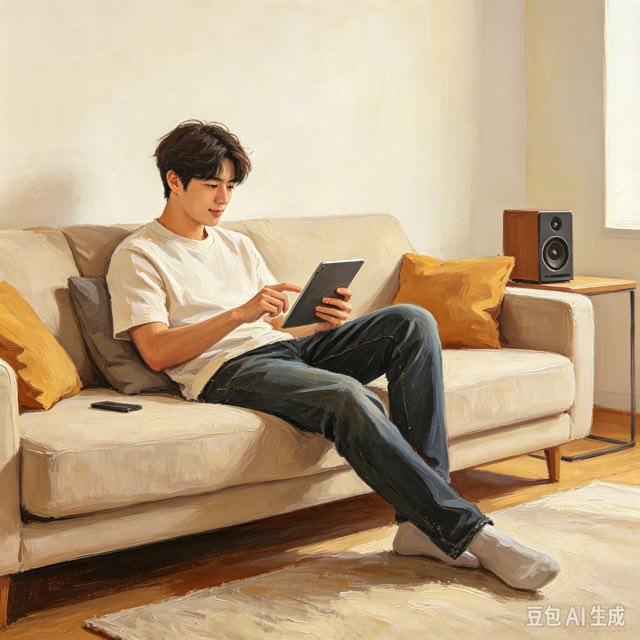
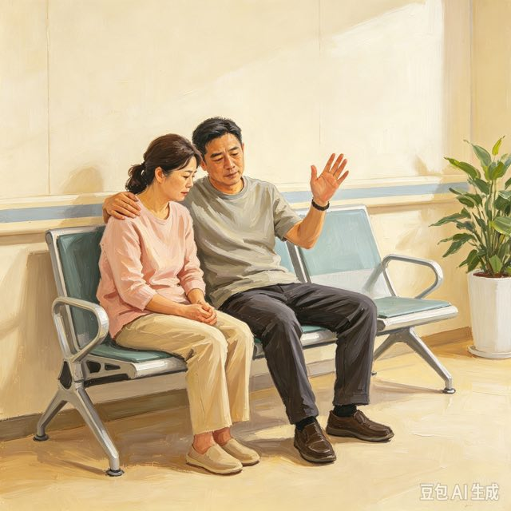
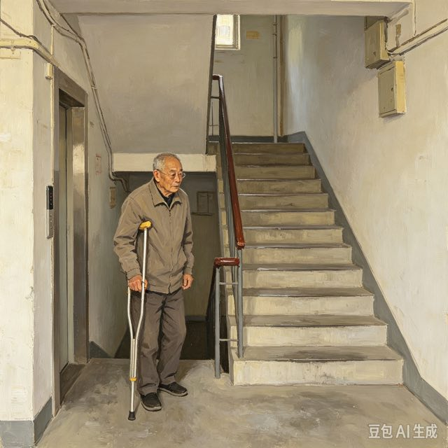
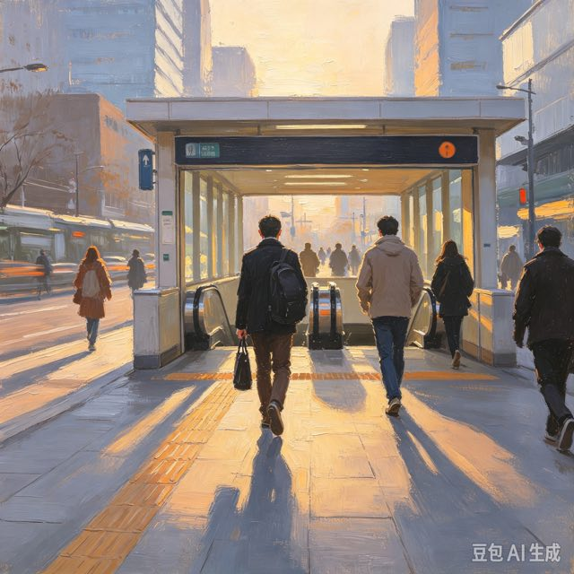
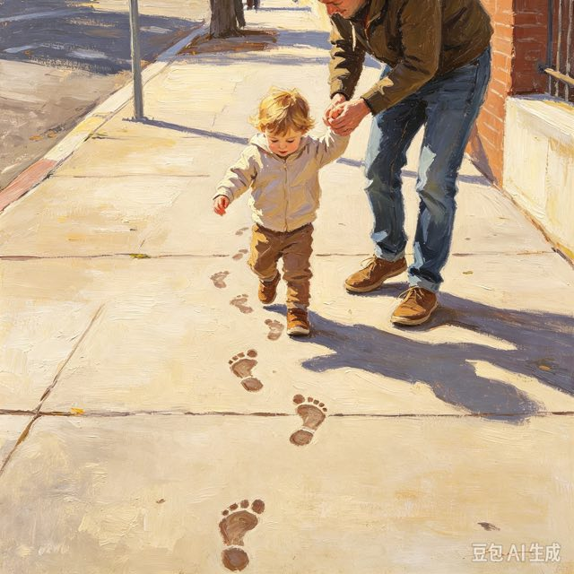

播放音乐、播放视频、播放新闻
1.手机正在播放音乐。
2.电视播放今天的新闻。
多用于音频、视频节目；后面接声音、影片类名词。
①电脑播放电影。（）
②我播放书。（）
参考答案：①（√） ②（×）
放映
读博士、博士学位、博士生
1.他正在读博士。
2.博士是很高的学位。
学位名称；区别：学士、硕士、博士。
①他拿到了博士学位。（）
②我读博士一次。（）
参考答案：①（√） ②（×）

不必担心、不必客气、不必着急
1.这点小事，你不必担心。
2.大家不必等我吃饭。
表示“不需要、用不着”，后面接动词。≠“不一定”。
①你不必客气。（）
②这件事不必昨天。（）
参考答案：①（√） ②（×）
用不着、无需

行动不便、交通不便、诸多不便
1.这里交通很不便。（形容词）
2.我身体不舒服，不便出门。（动词）
形容词：不方便；动词：不适宜、不宜做某事。
①老人腿脚行动不便。（）
②我不便一杯水。（）
参考答案：①（√） ②（×）
不方便

不断进步、不断努力、不断变化
1.我们要不断学习新的知识。
2.雨不断地下。
表示连续不停，后面接持续性动词。
①科技不断发展。（）
②我不断苹果。（）
参考答案：①（√） ②（×）
不停、持续
时间不够、钱不够、不够好
1.我的时间不够了。（动词）
2.这件衣服不够大。（副词）
动词：数量不足；副词：达不到某种程度。
①水不够喝。（）
②我不够书本。（）
参考答案：①（√） ②（×）
只是不过、不过也好
1.这件衣服很漂亮，不过太贵。（连词，转折）
2.他不过二十岁。（副词，仅仅）
连词表转折≈“但是”；副词表限定≈“仅仅、只是”。
①我想去，不过没有时间。（）
②我不过桌子高。（）
参考答案：①（√） ②（×）
但是、只是
不论白天黑夜、不论好坏
1.不论天气好不好，我们都要上课。
2.不论是谁，都要遵守规则。
条件连词，后面搭配“都 / 总”；≈“不管”。
①不论刮风下雨，他都坚持跑步。（）
②我不论苹果。（）
参考答案：①（√） ②（×）
不管

一步、跑步、进步
1.我向前走了一步。
2.学习要一步一步来。
名词：脚步；用于走路、阶段。合成词：跑步、进步。
①做事要一步一步来。（）
②我吃一步面包。（）
参考答案：①（√） ②（×）
内部、外部、一部电影
1.公司内部开会。（名词）
2.我看了一部很好看的电影。（量词）
名词：部分、部门；量词，用于电影、电话、机器。区分同音字：步 / 部。
①这是一部电视剧。（）
②一部面包。（）
参考答案：①（√） ②（×）